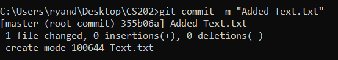

Tutorial: Version Control
Source control, intro to Git, simple git commands
For this tutorial, you will explore the version control features of Git. You will first add a file to the repository, then you will add information to the file while commiting changes along the way. Last, you will reset the file to a previous commit. Follow the tutorial and submit the last output from git log to learning suite by the end of class.
Directory - means a folder on your computer
Terminal - the black box on mac or linux, on Windows it is called the command prompt
We will start by creating a new repository and adding a file to it. Ask the instructor, a TAs or a classmate if you get stuck.

This is the first step in creating any project that you want to use git with. Git commands only work on git repositories. If you forget to initialize the repository, git will respond with this message: “fatal: not a git repository (or any of the parent directories): .git”
This command marks that you have added or changed a file and want it to be part of the next commit. Typing git status tells you any of the files that you have changed and might want to add.
git commit -m “<message>” (with “Added Text.txt” as your message)
Git commit makes a new version of your project. We want our commit messages to be as clear as possible so if something goes wrong and we have to roll back to a previous version, we will be able to tell what version we want.
You should see something like this after commiting your file.

Next, we will add some text to a file, commit it, then make some unwanted changes to the file, and finally reset the file back to a previous state.

Note that there are different ways of getting rid of a bad commit.
Before you’re done, we want you to see how git is valuable in software engineering. Read the text below, and then copy the output from the last git log command and submit it to learning suite. You may submit a screenshot of your git log output if you prefer.
When developers create big projects, they will often use a version control system (like git) to create “checkpoints” of their progress.
For example, these are some of the commits you might see in a project.
Sometimes changes that a developer makes will break the existing code. In the worse cases, the developers might not even remember how to get the project back to a working state. Fortunately with git, developers have the option of resetting their project back to a working state if they need to. This also allows developers to experiment with different potential changes and revert back to a state from before the changes were made.
Git has many more features that were not covered in this tutorial, including features that support group collaboration on file changes. These features are essential for development teams working on the same code base, where multiple developers may edit the same files. These group collaboration features will be explored in the next tutorial.